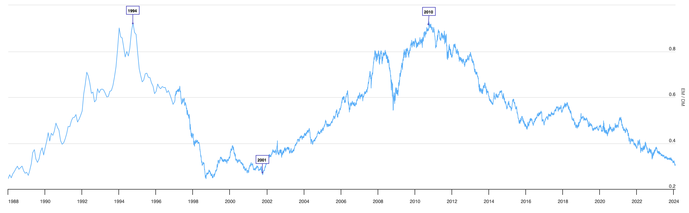
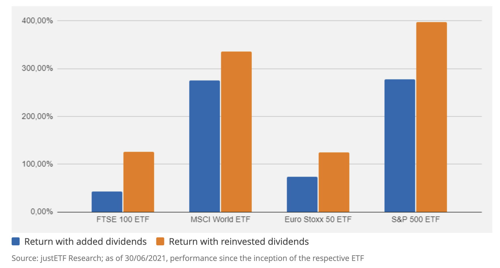
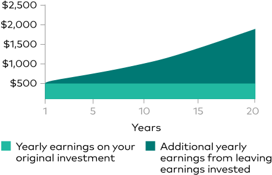
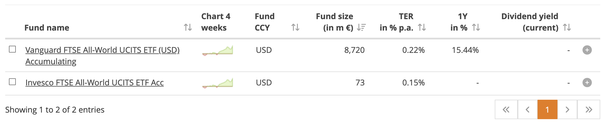

ETF
Lehet, hogy amit itt elhangzik félelmetesnek hat először. Ez teljesen természetes. Nyilván nem kell instant az összes pénzedet ETF-ekbe fektetned. Az bőven jó, ha kicsiben kezdesz és szép lassan hozzászoktatod magad az érzéshez, hogy nem a bankszámládon pihen a pénzed.
 Ne feledd: bármi, amit az interneten olvasol fenntartásokkal kezeld és járj utána magad is. Ehhez az irodalom szekció segítséget nyújthat.
Ne feledd: bármi, amit az interneten olvasol fenntartásokkal kezeld és járj utána magad is. Ehhez az irodalom szekció segítséget nyújthat.
MSCI World, FTSE All World
A két legnépszerűbb all-world indexek korábban említve voltak: MSCI World és FTSE All World. Az lényegi különbség, hogy az előbbi csak a fejlett országokat tartalmazza, míg az utóbbi a fejlett és a feltörekvő piacokat egyaránt. Voltak olyan időszakok a történelemben, amikor a feltörekvő piacok jobban teljesítettek, mint a fejlettek, ezért érdemes lehet az FTSE All World-öt választani.
Összehasonlító cikk
MSCI World vs. FTSE All World cikk. A konzekvencia, hogy MSCI World és az FTSE All World teljesítménye közt a különbség szabad szemmel alig látható.
Fejlett vs. feltörekvő piacok

MSCI Emerging Markets vs MSCI World Index: Amikor az arány emelkedik, a feltörekvő piacok teljesítménye jobb, amikor csökken, akkor a fejlett országoké. 2010 óta a fejlett piacok állnak nyerésre, de vajon meddig?
Profit elosztás: Accumulating vs. Distributing
Két fő típusú ETF létezik: accumulating (felhalmozó) és distributing (osztalékfizető). Az ETF neve után általában van egy "Acc" vagy "Dis" rövidítés, ami ezt jelzi. Az accumulating ETF-ek a kifizetett osztalékot automatikusan újra befektetik az alapba, míg a distributing ETF-ek kifizetik az osztalékot. Szinte kivétel nélkül az accumulating ETF-eket érdemes választani, mert így nem kell manuálisan újra befektetni az osztalékot.

 Osztalék kivétele vs osztalék visszaforgatása. Forrás: investor.vanguard.com.
Melyik ETF-et vegyem?
Mielőtt rátérünk, kezdjünk egy gyors kitekintéssel. Ha amerikai fórumokon böngészel befektetési tanácsadást vagy amerikai YouTubert nézel, az amerikai tőzsdén kapható ETF-ek azonosítóit fogod hallani. VOO, VT, VTI, SPY, QQQ és társai. Ezeket az ETF-eket Európában nem tudod megvenni (legalábbis kisbefektőként nem). Ez azért van, mert az EU országokra más törvények vonatkoznak - egész konkrétan az UCITS. Ne bánkódj, mert az amerikai verzióknak általában van 1:1 megfelelője Európában is.
Barátkozz meg a JustETF.com-mal, ami a legjobb barátod lesz az ETF-ek világában.
Tipp
A JustETF csak a lokációdnak megfelelő ETF-eket mutatja, véletlenül sem tudsz amerikaiba botlani.
Ha megnyitod a screener oldalt, válaszd ki a "Matching Indices"-nél az általad választott indexet, mondjuk FTSE All World-öt. A "Use of Profit"-ot állítsd accumulating-re. Az eredményt pedig rendezd "Fund Size" szerint csökkenő sorrendbe. Így a legnagyobb méretű ETF-eket fogod látni, ami általában a legjobb választás. Direkt link.

A képernyőkép készítés időpontjában csupán két darab ilyen ETF van, a Vanguard-é és az Invesco-é. A képen látszik továbbá, hogy a Vanguard 8720 millió, amíg az Invesco "csak" 73 millió eurót kezel. Az Invesco oldalán az alacsonyabb költség (0.15% vs 0.22%), a Vanguard oldalán pedig a nagyobb tőke és renomé szól. A hozamuk valószínűleg tizedpontossággal megegyezik, de ezt próbáld te kinyomozni. 
TER
A TER (Total Expense Ratio) az ETF éves költsége, amit a kezelt vagyon százalékában mérnek. Minél alacsonyabb, annál jobb. A TER teljesen "átlátszó" a befektető számára, neked semmit nem kell fizetned, mert a költségek már benne vannak az árfolyamban. A teljes történet kicsit összetettebb.
Házi feladat
Keresd ki JustETF-en a legpopulárisabb MSCI World ETF-et. Nézd meg, hogy melyik cégé és hogy mit lehet tudni a cégről.
Ha megnyitod az ETF oldalát és a legaljára tekersz a "Listings" részhez, látni fogod, hogy milyen azonosítóval (ticker) találod meg az ETF-et a különböző tőzsdéken. Általában ezen a néven is becézik őket (pl. VWCE). Van egy egyedi azonosítója is, aminek ISIN a neve és kicsit kevésbé megjegyezhetőbb. Legsűrűbben a frankfurti (XETRA) és a londoni (London Stock Exchange) tőzsdét használjuk, de attól is függ, hogy milyen pénznemben szeretnéd megvenni az ETF-et.
Pénznem
A pénznem teljesen mindegy, az árfolyam pont ugyanúgy változik. Válaszd azt, ami kényelmesebb.
Hol vegyem meg?
A tőzsdékről nem tudsz közvetlenül vásárolni, ehhez egy brókerre van szükség. Lásd a brókerek oldalt.
Hogyan adózom utána?
Ez a rész is a brókerek oldalon található.
Stratégia
A stratégia oldalon találsz pár tanácsot.